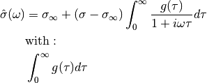

Formulation using the dielectric constant¶
Böttcher and Bordewijk, page 40:

For a  it follows (see eqs. 8.182 in
B&B):
it follows (see eqs. 8.182 in
B&B):

For multiple relaxation times in a discrete case (8.187 in B&W):

Transformation to conductivity¶
Tarasov and Titov substitute  for
for  (they cite the
electrostatic analogy and the formulation for dielectric materials with
losses):
(they cite the
electrostatic analogy and the formulation for dielectric materials with
losses):
